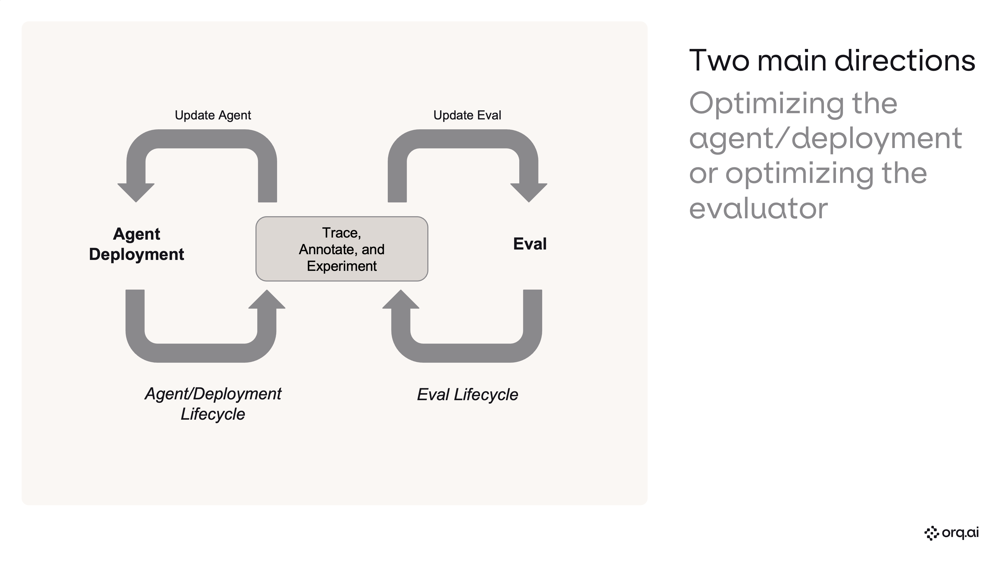

Build, run, and analyze evaluations — and talk to your observability data — without leaving your terminal. Real workflows, live.

Install Claude Code, wire up the orq.ai MCP server, and load the skills plugin.
terminal# Install Claude Code
npm install -g @anthropic-ai/claude-code
# Set your orq.ai API key
export ORQ_API_KEY="sk-orq-REPLACE_WITH_REAL_KEY"
# Add the orq.ai MCP server
claude mcp add --transport http orq https://my.orq.ai/v2/mcp \
--header "Authorization: Bearer ${ORQ_API_KEY}"
# Install orq.ai skills plugin
claude plugin install orq-skills@orq-claude-plugin
# Launch Claude Code
claudeSee what's already in your orq.ai workspace.
slash command/orq:workspaceNew users: go to AI Studio → AI Router and toggle on the models you need (e.g. Claude Sonnet 4.5, GPT-5.4-mini). Agents and experiments can only use models that are enabled here.
| Where | Action |
|---|---|
| my.orq.ai → AI Studio → AI Router | Toggle on required models |
Create a research assistant with web search and current date tools.
promptBuild a single agent called my-research-assistant in the Default project,
inside a folder called single-agent.
Run it on Anthropic's Claude Sonnet 4.5, resolve that against the
orq.ai model catalog.
Attach two built-in tools: Web Search and Current Date. Web Search lets
it pull live information, and Current Date anchors "current" to today's
actual date rather than the model's training cutoff.
Use these instructions verbatim:
"You are a research assistant. When asked about a topic, use web search
to find current, specific information. Always include source URLs in
your response. Be specific — include names, numbers, and dates rather
than generic summaries.
Be efficient with your web searches. Use at most 2 Google searches per
question — craft precise, targeted queries rather than running many
broad ones. Synthesize your findings after each search before deciding
whether another search is truly needed."
Also set max iterations to 3 and max execution time to 60 seconds.Generate a script that sends 10 diverse research questions to the agent via the REST API.
promptWrite invoke_agent.py (Python, stdlib only) that dispatches 10 diverse
research questions to my orq.ai agent my-research-assistant in parallel
— one thread per question, all fired at once. Just print status and
response time per query.
API reference: https://docs.orq.ai/docs/agents/agent-apiRun the script to generate traces.
terminalpython3 invoke_agent.pyRead recent traces, identify failure modes, quantify, and prioritize.
promptAnalyze recent trace failures and quality issues for my-research-assistant.
Read recent traces, inspect outputs, and build a failure taxonomy.
What is working, what is failing, and how often?| Expected outcome | |
|---|---|
| Failure taxonomy with rates | per-mode error % |
| Transition failure matrix | stage-by-stage |
| Prioritized recommendations | P0 / P1 / P2 |
Identify the #1 failure pattern and create a targeted LLM-as-a-judge evaluator.
promptAnalyze recent trace failures, identify the single highest-frequency
and highest-impact failure mode, then build one LLM-as-a-judge
evaluator specifically for that mode.
- Do not pre-commit to an evaluator name.
- Derive the name dynamically from the dominant failure pattern.
- Evaluator must be broadly applicable across any agent/workspace.
- Model: gpt-5.4-mini.Generate a complex, ambiguous dataset to stress-test the evaluator.
slash command/orq:generate-synthetic-dataset
Create "evaluator-validation" — 24 rows, 12 PASS / 12 FAIL.
Structure: inputs.query, inputs.response, expected_output ("PASS"/"FAIL").
PASS = specific (entities, numbers, dates, sources, tradeoffs).
FAIL = generic/vague (capability-listing, no evidence, no sources).
Make it complex: borderline cases, confident-sounding but weak responses.
Topics: policy, finance, travel, SaaS comparisons, infra/tooling.Test the evaluator prompt against the dataset.
slash command/orq:run-experiment
Experiment "evaluator-validation-depth" on dataset "evaluator-validation".
One task column, model openai/gpt-5.4-mini.
Instructions: binary PASS/FAIL on response depth — PASS if specific+sourced,
FAIL if vague. Input: "Query: {{query}}\nResponse: {{response}}\nReply PASS
or FAIL only." Evaluate against expected_output with exact-match.Compute accuracy, confusion matrix, and diagnose mismatches.
promptAnalyze the experiment run: accuracy, confusion matrix (TP/FN/TN/FP),
TPR, TNR. Show per-row breakdown. Inspect all mismatches — what's the
root cause?| Metric | Baseline |
|---|---|
| Accuracy | 79.2% |
| TPR (sensitivity) | 58.3% |
| TNR (specificity) | 100.0% |
| Root cause | Too strict on long, detailed PASS responses |
Add a second task column with an improved prompt and compare.
promptAdd a second task column with an improved prompt (few-shot examples,
length-is-not-a-penalty rule, sharper FAIL definition). Keep gpt-5.4-mini.
Re-run both columns side by side over the same dataset. Show accuracy,
TPR, TNR, fixes, and regressions.| Metric | Original | Improved | Delta |
|---|---|---|---|
| Accuracy | 75.0% | 100.0% | +25pp |
| TPR | 50.0% | 100.0% | +50pp |
| TNR | 100.0% | 100.0% | = |
| Fixes | +6 corrected, 0 regressions | ||
Validate evaluator accuracy against human judgment.
promptExport the run with the eval_check human annotation column. Show
annotated vs pending, agreement rates, and flag any human-vs-expected
disagreements.Productionize the winning evaluator prompt and wire it to the agent.
promptCreate an LLM evaluator from the winning column's prompt. Attach it
to "my-research-assistant" on output at 100% sample rate.